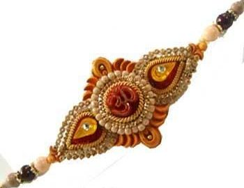
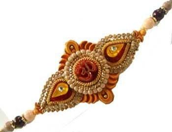

Festival of India

 

Festivals of India would not only enliven your spirits but also would be a warm welcome from the monotonous schedule of your regular life. The festivals of the state of West Bengal are in fact characterized by joyous ceremonies, enthusiasm paralleled with ample fun and celebration. Not only that during the festive celebrations the rich and the poor alike assemble together to enhance the spirit of their festive moods. The festivals of West Bengal embody the robust and composite cultural heritage of our nation. Various communities of the Indian subcontinent celebrate as many as forty festivals with complete communal concordance.